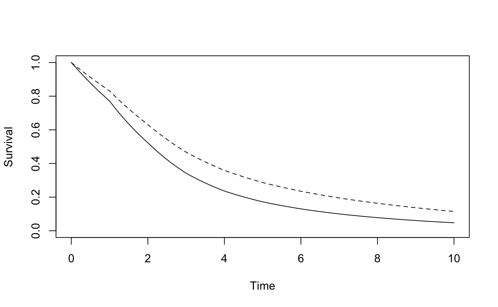
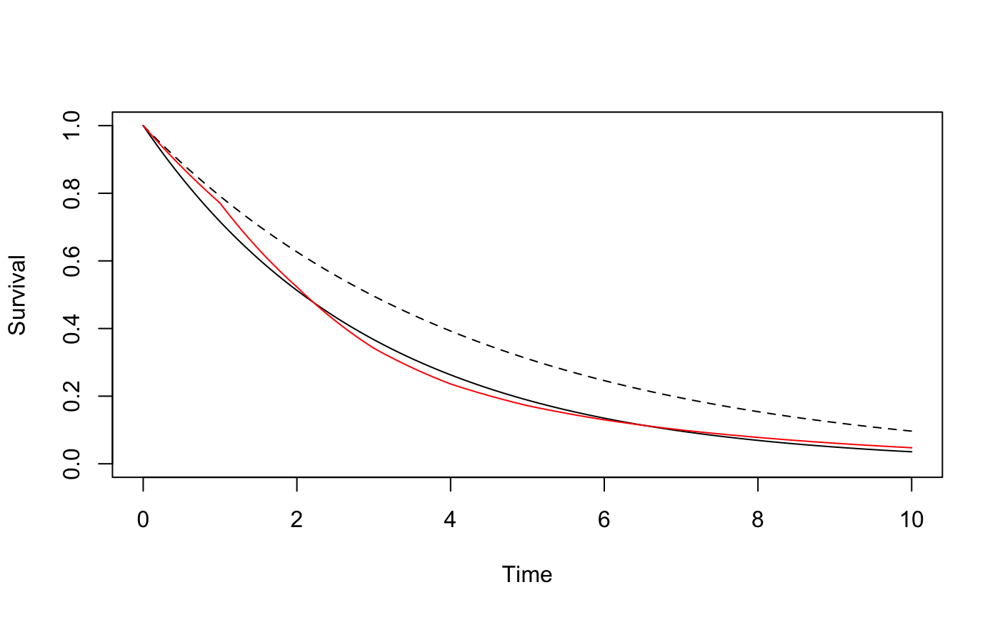

library(RMSTdesign)We use an example from the literature to demonstrate the use of the study design tools avaiable in the RMSTdesign package. This example was first presented in a paper by Royston and Parmar.1 They calculated the sample size required for a trial with mean survival time difference as the primary endpoint based on data from the GOG111 trial.2 Survival in the control arm was assumed to be piecewise exponential with survival probabilities at the end of years 1-8 equal to 0.771, 0.523, 0.342, 0.236, 0.172, 0.130, 0.100, 0.078, respectively, and the hazard ratio was assumed constant over time and equal to 0.71.
We can use survdef to define the survival distributions in the two groups, and plotsurvdef to plot them. To define gogC, we specify times as year 1-8 and surv as the survival probabilities at those times based on data from the GOG111 trial. This creates a survival distribution stored in gogC which is piecewise exponential with constant hazard on [0,1), [1,2), [2,3), [3,4), [4,5), [5,6), [6,7), [7,\(\infty\)). To define gogT_PH, we specify the hazard on the intervals [0,1), [1,2), [2,3), [3,4), [4,5), [5,6), [6,7), [7,\(\infty\)) as 0.71 times the hazard on the same intervals in the gogC group, or equivalently, the hazard at times 0, 1, 2, 3, 4, 5, 6 and 7, which can be generated in R using the command gogC$h(0:7).
gogC<-survdef(times = 1:8, surv=c(.771, .523,.342,.236,.172,.130,.1,.078))
gogT_PH<-survdef(times = 1:7, haz=0.71*gogC$h(0:7))
plotsurvdef(gogC, gogT_PH, xupper = 10)
The accrual period is set to \(k_1\)= 3 years and the followup period to \(k_2\)= 5 years, and the restriction time to \(\tau\)= 7.5 years. We can use RMSTpow to determine the sample size needed to achieve 90% power with a one-sided type I error level of 0.025 (the default value).
RMSTpow(gogC, gogT_PH, 3, 5, 7.5, power = 0.9)
#> $n
#> [1] 436
#>
#> $powerRMST
#> [1] 0.9009673
#>
#> $powerLR
#> [1] 0.9063212
#>
#> $pKME
#> [1] 0.9646479The required sample size is 436. This design proveds a 96% likelihood that the difference in mean survival time is estimable using the Kaplan-Meier estimator, which is reasonable.
RMSTpow can perform simulations to determine empirical power if we add the option sim=T. The following code performs 1000 simulations, and uses the tau_star modification if necessary, which is the default method.
set.seed(51719)
mytest1<-RMSTpow(gogC, gogT_PH, 3, 5, 7.5, power = 0.9, sim = T, M=1000)
#> [1] "Simulating datasets..."
mytest1
#> $n
#> [1] 436
#>
#> $powerRMST
#> [1] 0.9009673
#>
#> $powerLR
#> [1] 0.9063212
#>
#> $pKME
#> [1] 0.9646479
#>
#> $simout
#> $simout$emppowRMST
#> [1] 0.897
#>
#> $simout$emppowLR
#> [1] 0.846
#>
#> $simout$emppKME
#> [1] 0.968
#>
#> $simout$meandiff
#> [1] 0.729433
#>
#> $simout$SDdiff
#> [1] 0.2248616
#>
#> $simout$meantrunc
#> [1] 7.495396
#>
#> $simout$SDtrunc
#> [1] 0.03075082We see that the empirical power was 89.7%, and empirical probability the unmodified Kaplan-Meier estimator could be used was 0.968. The mean truncation time used in practice was 7.49 years with a standard deviation of 0.03 years.
The sample size estimate presented in Royston and Parmar for this scenario was 461. The disparity between the sample sizes is likely due to different approaches to estimating mean survival time difference and its variance; Royston and Parmar used flexible parametric models.
We may be interested in the trial design with the smallest total sample size, which is achieved when all patients are followed to time \(\tau\). The following code determines the sample size needed for a trial where everyone is followed time time \(\tau\) = 7.5 years:
RMSTpow(gogC, gogT_PH, 0, 7.5, 7.5, power = 0.9)
#> $n
#> [1] 432
#>
#> $powerRMST
#> [1] 0.9007778
#>
#> $powerLR
#> [1] 0.913869
#>
#> $pKME
#> [1] 1In the trial setting described, the smallest trial with 90% power requires 432 patients. Following all patients until time \(\tau\) offered almost no sample size savings compared to the original administrative censoring scheme. This design provides a 100% chance the mean survival difference will be Kaplan-Meier estimablen, as no patients are censored before time \(\tau\)
Alternatively, we may be interested in the trial with the shortest duration, given a certain accrual rate. If we assume the accrual rate is 145 patients per year, the following code will find the shortest duration trial that achieves 90% power and 95% chance the mean survival difference is Kaplan-Meier estimable at time \(\tau\).
shortest_duration(gogC, gogT_PH, 7.5, .9, 145, pKME = .95)
#> $k1
#> [1] 3.006897
#>
#> $k2
#> [1] 4.946418
#>
#> $duration
#> [1] 7.953315
#>
#> $n
#> [1] 436
#>
#> $powerRMST
#> [1] 0.900807
#>
#> $powerLR
#> [1] 0.905773
#>
#> $pKME
#> [1] 0.9506881We see that the shortest duration trial is 7.95 years long. In this example, because \(\tau\)=7.5, the shortest duration trial is not much shorter than the initial trial duration of 8 years.
Finally, we illustrate the use of Table 2 from our paper. In situations where the survival distributions can be approximated with exponential distributions, Table 2 can be used to get rough sample size estimates without a computer. For example, an exponential distribution with rate 0.3339 approximates the control group survival distribution from the GOG111 trial. From Table 2, for 90% power, with an expected hazard ratio of 0.7 (close to the hazard ratio of interest, 0.71), 550 patients are required if \(\tau\) is selected as the 75th percentile of control group survival (4.2 years), and 418 if \(\tau\) is the 90th percentile (6.9 years). These rough estimates are useful to determine whether mean survival time may be a feasible endpoint, and to inform a guess of accrual time, which can then be input in our R-package along with other design parameters to refine the design.
The following code shows how we obtained the rate of 0.3339 and how the same sample sizes could have been obtained using RMSTpow rather than Table 2. First, we determine the rate parameter of the exponential distribution that approximates the survival curve from the GOG111 trial data by modelling the log survival probabilities as a function of time. Then, we used survdef to define the control group survival distribution, and the treatment group survival distribution corresponding to a hazard ratio of 0.7. (We are using 0.7 because sample sizes for a hazard ratio of 0.7 are shown in Table 2, and we are trying to match Table 2.) We plot both curves, along with the survival curve we were trying to approximate for the control group (in red).
y <- -log(c(.771, .523,.342,.236,.172,.130,.1,.078))
x<-1:8
lambda<-lm(y~x-1)$coefficients
lambda
#> x
#> 0.3339218
# Use survdef to define the survival distributions in each group
gogCexp<-survdef(haz = lambda)
gogTexp<-survdef(haz=0.7*gogCexp$h(0))
# Plot the two survival distributions. Overlay the originial piecewise exponential control group distribution
plotsurvdef(gogCexp, gogTexp, xupper = 10)
lines(seq(0, 10, .01), gogC$S(seq(0, 10, .01)), col = 'red')
Next, we use the RMSTpow function to determine the required sample size if \(\tau\) is selected as the 75th percentile of control group survival (4.2 years), and if \(\tau\) is the 90th percentile (6.9 years).
# Show that 6.9 years corresponds to a survival probability of 0.1, and 4.2 corresponds to a survival probability of 0.25:
qexp(0.1, rate = lambda, lower.tail = F)
#> [1] 6.895583
qexp(0.25, rate = lambda, lower.tail = F)
#> [1] 4.151554
# Determine the sample size for each tau, for 90% power, with all patients followed until time tau
RMSTpow(gogCexp, gogTexp, 0, qexp(0.1, rate = lambda, lower.tail = F),
qexp(0.1, rate = lambda, lower.tail = F), power = 0.9)
#> $n
#> [1] 418
#>
#> $powerRMST
#> [1] 0.9007918
#>
#> $powerLR
#> [1] 0.9192127
#>
#> $pKME
#> [1] 1
RMSTpow(gogCexp, gogTexp, 0, qexp(0.25, rate = lambda, lower.tail = F),
qexp(0.25, rate = lambda, lower.tail = F), power = 0.9)
#> $n
#> [1] 550
#>
#> $powerRMST
#> [1] 0.9009902
#>
#> $powerLR
#> [1] 0.9331826
#>
#> $pKME
#> [1] 1We see that the numbers obtained match Table 2. If we had instead used a hazard ratio of 0.71, exactly what was observed in the GOG111 trial, the required sample size would have been larger.
gogTexp<-survdef(haz=0.71*gogCexp$h(0))
RMSTpow(gogCexp, gogTexp, 0, qexp(0.1, rate = lambda, lower.tail = F),
qexp(0.1, rate = lambda, lower.tail = F), power = 0.9)
#> $n
#> [1] 452
#>
#> $powerRMST
#> [1] 0.9006922
#>
#> $powerLR
#> [1] 0.919161
#>
#> $pKME
#> [1] 1
RMSTpow(gogCexp, gogTexp, 0, qexp(0.25, rate = lambda, lower.tail = F),
qexp(0.25, rate = lambda, lower.tail = F), power = 0.9)
#> $n
#> [1] 594
#>
#> $powerRMST
#> [1] 0.9008899
#>
#> $powerLR
#> [1] 0.9331321
#>
#> $pKME
#> [1] 1Royston P and Parmar MK. Restricted mean survival time: an alternative to the hazard ratio for the design and analysis of randomized trials with a time-to-event outcome. BMC Med Res Methodol 2013; 13: 152.↩
McGuire WP, Hoskins WJ, Brady MF, et al. Cyclophosphamide and cisplatin compared with paclitaxel and cisplatin in patients with stage III and stage IV ovarian cancer. N Engl J Med 1996; 334: 1-6.↩